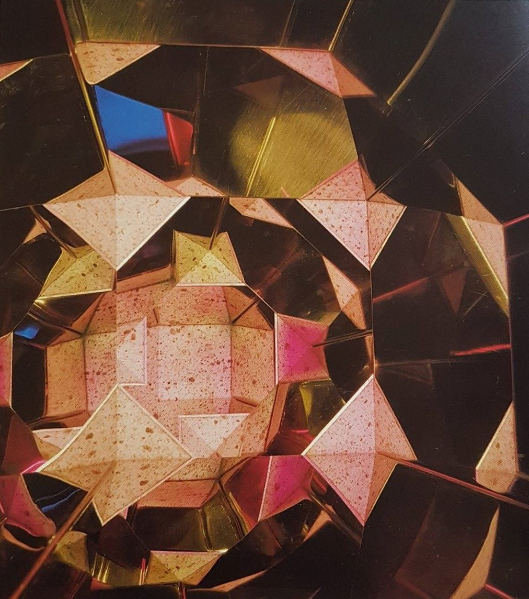

proposta per una chiesa ispirata alla geometria degli iperspazi (1983)
Attilio Pierelli rivedeva nelle leggi della geometria iperspaziale le stesse potenzialità che ebbero quelle prospettiche formulate nel Rinascimento. Infatti, così come da quest’ultime derivarono nel corso dei secoli alcune tra le più fondamentali innovazioni artistiche, scientifiche e religiose, con la progettazione di una chiesa ispirata alla quarta dimensione, Pierelli, aspirava ad un’architettura che tentasse di unificare scienza e religione.
Il modello della Chiesa della Madonna del Rosario ideato da Pierelli risale al 1983, ma venne presentato soltanto nel 2000, durante un’esposizione a Viterbo presso il Museo del Colle del Duomo. Il progetto riprende, modifica ed unisce le due tipiche forme strutturali degli edifici cultuali cristiani: il sistema a impianto basilicale (simmetricamente rapportato ad un asse longitudinale mediano) e quello a impianto centrale (organizzato intorno ad un asse verticale e quindi caratterizzato da forme a pianta circolare, poligonale o quadrata).
L’edificio centrale del modello della Chiesa possiede una pianta a croce greca, ritenuta la forma perfetta dagli architetti rinascimentali, ma trovandosi all’interno di una costruzione “ipercubica”, la struttura assume eccezionalmente uno sviluppo verticale. Le superfici riflettenti permettono, inoltre, alla base cruciforme di rimanere visibile da qualsiasi punto la si osservi, persino dall’alto, mentre la scelta della verticalità consente di creare più spazi assembleari. Nella chiesa iperspaziale di Pierelli l’innovazione si innesta sul tradizionale, rendendo presente un futuro che continua a dialogare con il passato. Dal canto suo, Pierelli dice di non aver inventato nulla, ma di aver semplicemente percepito una visione, un’immagine che era già stata descritta accuratamente nell’Apocalisse di Giovanni:

Proposta per una chiesa ispirata alla geometria degli iperspazi (dettaglio di una vetrata)
«L'Angelo mi trasportò in spirito sopra un monte grande e alto, e mi mostrò la Città Santa, Gerusalemme, che scendeva dal Cielo da presso Dio, avendo in sé la gloria di Dio. Il suo splendore era simile a quello di una gemma preziosissima, come pietra di diaspro cristallino. […] La città era quadrangolare, e la sua lunghezza equivaleva alla sua larghezza. […] la lunghezza la larghezza e l'altezza erano uguali. […] Le sue mura erano costruite in diaspro, e la città era di oro puro, simile a terso cristallo».